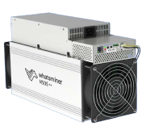
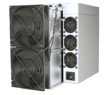
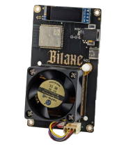

Nasıl Çalışır?
Nasıl Çalışır?
MADENCİLİK HAKKINDA DAHA FAZLA BİLGİ
Bitcoin, dünya genelinde özel olarak tasarlanmış güçlü
bilgisayarlar tarafından 'madenciliği' yapılır. Bunlara ASIC
madencileri denir: Uygulamaya Özel Entegre Devre madencileri.

Whatsminer M50S

Antminer S21 Pro

Bitaxe 401 Supra
Madenciler, Bitcoin blok zincirine blok eklemek için
hesaplama gücünü, yani hash oranını, elektrik yoluyla ağa
adarlar.
Bu bilgisayarlar günde 24 saat çalışır, genellikle birkaç taneden
birkaç yüz veya bine kadar set halinde.
Temel olarak bir piyango çekilişi yapıyorlar. İçlerinden biri
mevcut zorluk hedefini karşılayan bir hash üreten bir sayıyı
(nonce)
tahmin ettiğinde, zaman zincirine bir sonraki bloğu ekleme
hakkını kazanır.
Yukarıdakilerin tümü, yeni bitcoinlerin doğması için gereken iş
ispatıdır (PoW).